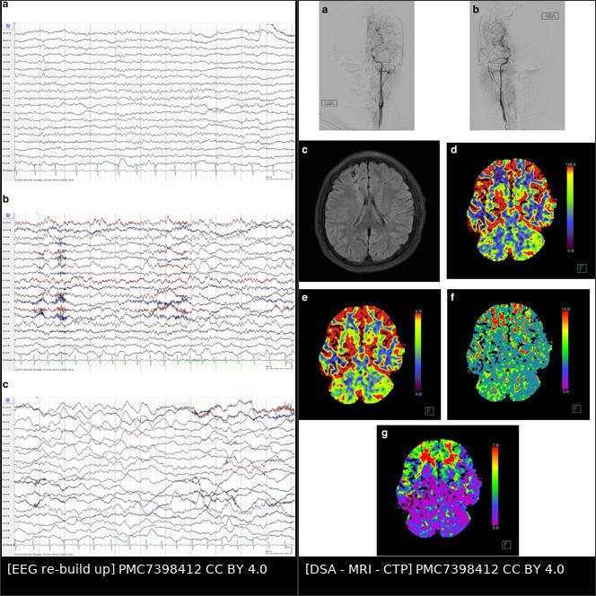
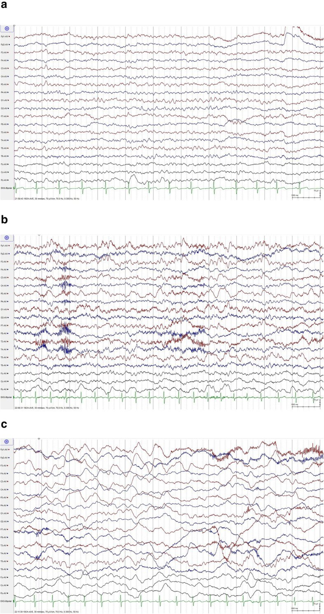
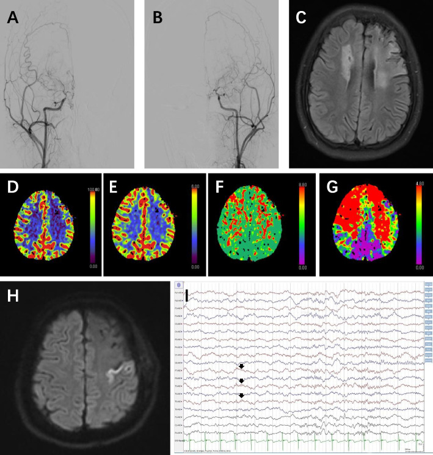
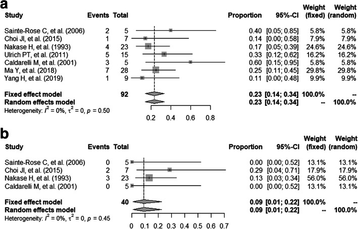

1785 — Động kinh sau tái thông moyamoya ở trẻ: phân biệt cơn do CHS – nhồi máu – xuất huyết, EEG "re-build up" và khi nào dùng thuốc chống động kinh
Tags: pattern:dong-kinh pattern:thieu-mau-nao pattern:tuoi-mau-bang-he vung:nao-nhi vung:vo-nao vung:mach-nao protocol:EEG protocol:MRI-DWI protocol:ASL protocol:CTP
Mức chắc chắn (certainty): tổng hợp y văn (literature synthesis) — gộp tổng quan phạm vi 43 bài về cơn/động kinh/EEG ở moyamoya trẻ (PMID 36577597), đoàn hệ 84 trẻ (PMID 37271055), đoàn hệ 110 trẻ có EEG (PMC7398412), 298 ca tìm yếu tố dự báo cơn sớm sau mổ (PMC9793645), 696 ca với 28 trẻ có cơn trước mổ (PMID 29128331) và meta-analysis 7 đoàn hệ (PMC7852094). Chỗ nguồn không có số thì ghi "chưa rõ".
Câu chốt: cơn sau tái thông moyamoya không phải một chẩn đoán mà là một trong bốn trạng thái tưới máu khác nhau: cơn do tăng tưới máu (CHS), do nhồi máu, do xuất huyết, hoặc động kinh nền tiếp diễn. Điều trị khác nhau hoàn toàn — hạ huyết áp cho CHS, xử trí nhồi máu, còn thuốc chống động kinh chỉ giải quyết triệu chứng. Vì vậy mọi cơn sau mổ phải được chụp hình trong 24 giờ đầu trước khi chỉ tăng liều thuốc. Bổ trợ trực tiếp cho 1784 – Hội chứng tưới máu quá mức (CHS); nối 1780 – Chọn kỹ thuật tái thông, 1782 – Phình mạch trong moyamoya, 1795 – Xuất huyết/vi chảy máu moyamoya và 681 – Chống kết tập tiểu cầu sau tái thông.
1. Tổng quan bệnh học – cơ chế hình ảnh
1.1 Vì sao trẻ moyamoya bị động kinh (và vì sao > một nửa không có ổ nhồi máu)
- Thiếu máu mạn → tái cấu trúc vỏ não: hẹp tiến triển động mạch cảnh trong + bàng hệ mỏng manh làm vỏ não hạ tưới mạn. Tế bào thần kinh trong vùng dự trữ tưới máu cạn (misery perfusion) dễ bị khử cực bất thường khi có stress chuyển hóa — đây là cơ chế "động kinh do huyết động" (hemodynamic epilepsy), không cần ổ nhồi máu.
- Bằng chứng: trong tổng quan phạm vi 43 bài, 9–19% trẻ moyamoya có động kinh, và hơn một nửa số ca không có bằng chứng thiếu máu trên hình ảnh (PMID 36577597). Nghĩa là MRI bình thường không loại trừ động kinh moyamoya.
- Vì sao trẻ nhỏ và trẻ có triệu chứng dễ bị hơn: tuổi nhỏ là yếu tố nhất quán nhất; trong 84 trẻ, moyamoya nguyên phát (bệnh) so với hội chứng OR 3,43, có ổ nhồi máu trên hình ảnh nền OR 5,80, tuổi lớn hơn mỗi năm OR 0,82, phát hiện tình cờ trên hình ảnh OR 0,05 (PMID 37271055).
- Vì sao tăng thông khí gây cơn: khóc, thổi sáo, chạy… → giảm CO₂ → co mạch não; ở trẻ đã dùng hết dự trữ giãn mạch, co mạch này không bù trừ được → thiếu máu khu trú → cơn hoặc TIA. Đây là lý do tăng thông khí trong EEG không phải "nghiệm pháp vô hại" ở moyamoya.
- Vì sao sau mổ vẫn còn cơn: tái thông tạo dòng máu mới nhưng không hồi phục ngay vùng vỏ đã tổn thương; đồng thời thay đổi huyết động cấp (tăng tưới máu hoặc nhồi máu chu phẫu) tạo cơn sớm. Vì vậy tỉ lệ cơn sau mổ vẫn đáng kể (mục 1.2).
1.2 Ngưỡng định lượng nằm lòng
| Chỉ số | Con số | Nguồn |
|---|---|---|
| Động kinh ở trẻ moyamoya | 9–19%; > 50% không có thiếu máu trên hình ảnh | PMID 36577597 |
| Cơn ở đoàn hệ chuyên khoa | 40% (34/84) — quần thể được giới thiệu, cao hơn dân số chung | PMID 37271055 |
| Tiền sử cơn/động kinh | 15,5% (17/110); nhồi máu làm tăng RR 1,62 | PMC7398412 |
| EEG bất thường (15 trẻ có EEG đầy đủ) | 93,3% — chậm khu trú 80,0%, phóng điện động kinh 66,7%, chậm lan tỏa 60,0%; "re-build up" 1 ca | PMC7398412 |
| Hiện tượng "re-build up" khi tăng thông khí | tới 50% trẻ moyamoya | PMC12593773 (tổng quan) |
| Cơn SỚM sau tái thông (< 1 tuần) | 5,0% (15/298) | PMC9793645 |
| Yếu tố dự báo cơn sớm | nhồi máu sau mổ OR 12,89 (4,198–39,525); nhồi máu trước mổ OR 4,08 (1,267–13,119); tuổi và bên nhồi máu không có ý nghĩa | PMC9793645 |
| Cơn sau mổ ở trẻ đã có động kinh trước mổ | 23,44% (gộp 7 đoàn hệ) | PMC7852094 |
| Nhồi máu sau mổ ở nhóm động kinh | 9,12% | PMC7852094 |
| Tái phát cơn sau tái thông | 25,0% (7/28), trung vị theo dõi 42 tháng | PMID 29128331 |
| Yếu tố dự báo tái phát | thời gian mắc động kinh OR 3,84 (1,54–24,34), p = 0,035; trực tiếp vs gián tiếp không khác | PMID 29128331 |
| Cơn là biến chứng của CHS | 8% (95% CI 5–11%) | PMID 41392131 (qua bài 1784) |
| Ảnh hưởng chức năng | Có cơn → điểm PSOM cao hơn +2,03 (p < 0,001), sau hiệu chỉnh +1,54 (p = 0,025) | PMID 37271055 |
1.3 Vì sao EEG thấy "re-build up" (vật lý – sinh lý, không phải mẹo đọc)
- Bình thường: tăng thông khí → hypocapnia → co mạch → sóng chậm đồng bộ xuất hiện, rồi mất nhanh trong 30–60 giây sau khi thở lại (phản ứng mạch bình thường).
- Moyamoya: mạch đã giãn tối đa để bù hẹp; khi hypocapnia, không còn khả năng co–giãn dự trữ → vùng vỏ hạ tưới không "bắt kịp" → sóng chậm delta quay trở lại muộn và kéo dài ở phút thứ 5 sau tăng thông khí. Đây là dấu hiệu suy giảm dự trữ tưới máu, không phải tổn thương cấu trúc.
- Hệ quả thực hành: "re-build up" không phải phóng điện động kinh; đọc nhầm thành ổ động kinh khu trú sẽ dẫn tới dùng thuốc sai trong khi vấn đề là huyết động. Ngược lại, phóng điện thật (spike/polyspike) mới là đích của thuốc.
2. Mẫu hình + chẩn đoán phân biệt theo vị trí (gamut)
Mẫu hình: trẻ moyamoya sau tái thông, xuất hiện cơn co giật cục bộ (một chi, mặt, hoặc có quán tính) ± lan toàn thể, thường trong 1 tuần đầu hoặc muộn hơn khi giảm/ngừng thuốc.
Bốn trục sinh lý — phân biệt theo thời điểm + hình ảnh + huyết áp:
- Trục 1 — Cơn do tăng tưới máu (CHS): xuất hiện 15 phút – 6 ngày sau mổ, kèm đau đầu khu trú, huyết áp tăng, hình ảnh ASL/CTP tăng tưới máu vùng mổ, không nhồi máu/xuất huyết mới (bài 1784).
- Trục 2 — Cơn do nhồi máu chu phẫu: cơn sớm, kèm khiếm khuyết thần kinh tồn tại, DWI sáng/ADC tối trong lãnh thổ mới; đây là yếu tố nguy cơ mạnh nhất (OR 12,89).
- Trục 3 — Cơn do xuất huyết: đau đầu dữ dội, nôn, tri giác xấu đi; NCCT tăng đậm độ 50–80 HU, SWI thấy vi chảy máu; thường liên quan phình bàng hệ hoặc CHS nặng (bài 1782/1795).
- Trục 4 — Động kinh nền (trước mổ) tiếp diễn: cơn giống hệt cơn cũ, không kèm thay đổi hình ảnh; thời gian mắc càng dài, nguy cơ tái phát càng cao (OR 3,84).
- Bắt chước (mimics): TIA rung lắc chi (limb-shaking TIA) — cơn ngắn 1–2 phút, không mất ý thức, không có phóng điện trên EEG, khởi phát khi khóc/vận động; ngất do ho/khóc, đau nửa đầu có aura, cơn giả động kinh (PNES) ở trẻ lớn.
Mnemonic "4T": Thời điểm (Timing), Tưới máu (perfusion — ASL/CTP), Tổn thương (DWI/SWI), Thuốc (drug level/Adherence).
3. Bảng so sánh phân biệt (ma trận đối chiếu)
| Thực thể (entity) | Hình ảnh/lâm sàng điển hình | Chốt vào (rule-in) | Chốt loại (rule-out) | Gợi ý xác nhận |
|---|---|---|---|---|
| Cơn do CHS | Cơn trong 6 ngày đầu, đau đầu khu trú, HA tăng, ASL/CTP tăng tưới máu vùng mổ, không nhồi máu/xuất huyết | CBF vùng mổ tăng > 100% so với trước mổ (hoặc tăng rõ trên ASL) + không tổn thương mới | DWI có ổ hạn chế khuếch tán mới → không phải CHS đơn thuần | ASL/CTP, theo dõi HA, hạ áp có kiểm soát |
| Cơn do nhồi máu | Cơn sớm, khiếm khuyết tồn tại, DWI sáng/ADC tối theo lãnh thổ | DWI dương tính trong 24 giờ + cơn phù hợp lãnh thổ | MRI/DWI âm tính sau 24–48 giờ → ít khả năng | MRI DWI/ADC, MRA miệng nối |
| Cơn do xuất huyết | Đau đầu dữ dội, nôn, tri giác giảm; NCCT tăng đậm độ, SWI vi chảy máu | Máu trên NCCT/SWI | NCCT/SWI âm tính | NCCT cấp, SWI, CTA/DSA nếu nghi phình |
| Động kinh nền tái phát | Cơn giống cơn trước mổ, không tổn thương mới, thời gian mắc dài | Cơn kiểu cũ + EEG ổ phóng điện cũ | Cơn kiểu mới + tổn thương mới → tìm nguyên nhân cấp | EEG so sánh trước–sau, hỏi người nhà quay video |
| TIA rung lắc chi | Rung lắc một chi 1–2 phút, không mất ý thức, khởi phát khi khóc/vận động, không có phóng điện | Video + EEG ictal không có phóng điện | Phóng điện ictal rõ → động kinh thật | EEG trong cơn, ASL/CTP tìm hạ tưới |
| Cơn giả động kinh (PNES) | Đa dạng, mắt nhắm chặt, không chấn thương, kéo dài, EEG bình thường trong cơn | EEG ictal bình thường + yếu tố tâm lý | Prolactin sau cơn tăng, phóng điện ictal → cơn thật | EEG video, đánh giá tâm lý |

Trái: EEG trước – cuối – 5 phút sau tăng thông khí, sóng chậm khu trú bán cầu trái tái xuất hiện muộn ("re-build up"). Phải: cùng bệnh nhi 9 tuổi — DSA hẹp tận động mạch cảnh trong hai bên, MRI FLAIR ổ nhồi máu trán hai bên, CTP giảm tưới máu trán. Chin Neurosurg J 2020 (PMC7398412), CC BY 4.0; ảnh ghép letterbox.Ba dấu hiệu quyết định
- Cơn + huyết áp tăng + ASL nóng = CHS: hướng điều trị là hạ huyết áp có kiểm soát, không phải tăng thuốc chống động kinh (bài 1784).
- Cơn + DWI dương tính = nhồi máu: đây là biến chứng, không phải "cơn đơn thuần"; OR 12,89 giải thích vì sao phải chụp MRI trước khi kết luận.
- "Re-build up" không phải ổ động kinh: nó chỉ ra vùng dự trữ tưới máu kém, thường cải thiện sau tái thông thành công (PMID 36577597).
4. Protocol chụp + hệ phân độ/điểm chuẩn hóa
4.1 Đánh giá một cơn sau tái thông (24 giờ đầu)
- Lâm sàng: hỏi video điện thoại (quý hơn mô tả), thời lượng, có mất ý thức, có yếu nửa người sau cơn (Todd), đo huyết áp ngay.
- NCCT không cản quang nếu cơn kèm đau đầu dữ dội/nôn/tri giác xấu — loại xuất huyết (50–80 HU).
- MRI khẩn: DWI/ADC (nhồi máu), FLAIR, SWI (vi chảy máu), ASL (tăng/giảm tưới máu), MRA TOF (miệng nối, hẹp tiến triển). Thời gian lý tưởng ≤ 24 giờ sau cơn.
- EEG:
- EEG thường ≥ 30 phút, có giai đoạn ngủ — tìm phóng điện, chậm khu trú, và re-build up.
- Tăng thông khí có kiểm soát ≤ 3 phút, luôn có người theo dõi lâm sàng, dừng ngay nếu trẻ yếu/đau đầu/nói khó — vì có thể gây thiếu máu thật (mục 5).
- EEG liên tục (cEEG) khi: cơn lặp lại, không hồi phục tri giác, nghi trạng thái động kinh không co giật, hoặc trẻ thở máy sau mổ.
- Phân tầng theo kết quả: CHS (bài 1784) · nhồi máu (xử trí huyết động, không hạ áp mù) · xuất huyết (bài 1795) · động kinh nền (thuốc + theo dõi).
4.2 Thuốc chống động kinh: khi nào, bao lâu
- Không có RCT chọn thuốc cho moyamoya; thực hành chọn theo động kinh cục bộ có căn nguyên mạch máu (tương tự động kinh sau đột quỵ) — đây là suy luận từ dữ liệu dược lý, không phải bằng chứng cấp 1 (PMC12593773).
- Bắt đầu thuốc khi: có ≥ 1 cơn co giật rõ ràng hoặc phóng điện động kinh kèm cơn trên EEG, đặc biệt khi đã loại trừ nguyên nhân cấp có thể sửa (CHS, nhồi máu, xuất huyết).
- Dự phòng sau mổ thường quy: chưa có bằng chứng; một số trung tâm dùng ngắn hạn trong phác đồ CHS (ví dụ 100 mg/ngày trong một đoàn hệ — PMC12852945 qua bài 1784), nhưng không được coi là chuẩn.
- Thời gian: ngừng thuốc chỉ khi ≥ 2 năm không cơn + EEG không còn phóng điện + tưới máu ổn định trên ASL/CTP (suy luận — chưa có nghiên cứu riêng ở moyamoya); không ngừng đột ngột ở trẻ có ổ tổn thương vỏ não.
- Sau khi ngừng: theo dõi ≥ 6 tháng, dặn quay lại ngay nếu cơn tái xuất — vì 25% trẻ có cơn trước mổ vẫn tái phát dù đã tái thông (PMID 29128331).
4.3 Sơ đồ tiếp cận
flowchart TD
A[Trẻ moyamoya có cơn sau tái thông] --> B[Đo HA + hỏi video + khám thần kinh]
B --> C{Có đau đầu dữ dội, nôn, tri giác xấu?}
C -->|Có| D[NCCT: loại xuất huyết 50-80 HU]
C -->|Không| E[MRI: DWI/ADC + FLAIR + SWI + ASL + MRA]
D --> E
E -->|DWI dương tính| F[Nhồi máu chu phẫu: xử trí huyết động]
E -->|ASL tăng vùng mổ, không tổn thương mới| G[CHS: hạ huyết áp có kiểm soát]
E -->|SWI/NCCT có máu| H[Xuất huyết: xem bài 1795]
E -->|Không tổn thương mới| I[EEG >= 30 phút + giai đoạn ngủ]
I -->|Phóng điện + cơn| J[Bắt đầu thuốc chống động kinh]
I -->|Chỉ re-build up| K[Không phải động kinh: tối ưu tưới máu]
I -->|Nghi trạng thái không co giật| L[EEG liên tục]
Không có RADS cho động kinh moyamoya. "Phân độ" dùng trong bài này là phân tầng cơ chế 4 trục (CHS / nhồi máu / xuất huyết / động kinh nền) — vì nó quyết định điều trị, còn phân độ hình ảnh không có.
5. Biến thể bình thường và cạm bẫy
- Biến thể bình thường: sóng chậm sau tăng thông khí ở trẻ lành (mất trong 30–60 giây); re-build up khác ở chỗ quay lại muộn và kéo dài — đừng overcall "ổ động kinh" chỉ vì có chậm khu trú.
- Bẫy 1 — tăng thông khí gây thiếu máu thật: ở trẻ moyamoya, nghiệm pháp này có thể gây cơn/TIA; luôn giới hạn thời gian, có giám sát, dừng khi có triệu chứng. Đừng lặp lại nhiều lần "để chắc".
- Bẫy 2 — yếu nửa người sau cơn (Todd) bị đọc là CHS/đột quỵ: Todd hồi phục trong 24–48 giờ, không có tổn thương mới; CHS có tăng tưới máu trên ASL; đột quỵ có DWI dương tính. Điều trị sai hướng (hạ áp mù vs tăng thuốc) đều nguy hiểm.
- Bẫy 3 — cơn sớm là dấu hiệu của nhồi máu: OR 12,89; nếu chỉ thêm thuốc chống động kinh mà không chụp MRI, bỏ sót nhồi máu và mất cửa sổ xử trí.
- Bẫy 4 — CHS có cơn: 8% ca CHS có cơn; hạ áp là điều trị chính, không phải thuốc chống động kinh.
- Bẫy 5 — tưởng tái thông "chữa khỏi" động kinh: 23,44% trẻ có động kinh trước mổ vẫn còn cơn sau mổ; 25% tái phát trong theo dõi trung vị 42 tháng → phải theo dõi dài, không ngừng thuốc sớm.
- Bẫy 6 — bỏ sót TIA rung lắc chi: cơn ngắn, không mất ý thức, EEG không phóng điện; tăng thuốc chống động kinh không giúp, cần đánh giá tưới máu và tái thông.
- Bẫy 7 — an thần che lấp: thuốc chống động kinh liều cao làm trẻ ngủ gà, khó đánh giá tri giác và che dấu hiệu CHS/nhồi máu; giữ liều thấp nhất hiệu quả, đánh giá lại sau 24–48 giờ.
6. Tự lượng giá — Blind Quiz
Ca 1 — Bé trai 10 tuổi moyamoya, EEG làm trước và sau tăng thông khí.

- Gợi ý: trẻ có cơn rung lắc tay trái khi khóc; không sốt.
- Câu hỏi: (a) hình b và c khác nhau ở đâu? (b) đây có phải phóng điện động kinh không? (c) dấu hiệu này nói lên điều gì về sinh lý mạch máu?
Bấm để hiện đáp án (findings + chẩn đoán)
- Findings: (a) trước tăng thông khí — nền tương đối đối xứng; (b) cuối tăng thông khí — sóng chậm bán cầu trái; (c) 5 phút sau — sóng chậm tái xuất hiện và lan rộng ở bán cầu trái = "re-build up".
- Không phải phóng điện động kinh (không có spike/polyspike ictal) → không phải chỉ định thuốc chống động kinh dựa trên hình này.
- Ý nghĩa: vùng bán cầu trái mất dự trữ giãn mạch — hypocapnia gây co mạch không bù trừ được; đây là dấu hiệu hạ tưới máu huyết động, thường cải thiện sau tái thông.
- Nguồn ảnh: Chin Neurosurg J 2020 (PMC7398412), Hình 2, CC BY 4.0.
Ca 2 — Bé gái 14 tuổi, 1 ngày sau EDAS trái, co giật tay phải nhưng vẫn tỉnh.

- Câu hỏi: Cơn này do CHS hay do nhồi máu? Dấu hiệu nào trên hình quyết định? Xử trí khác nhau thế nào?
Bấm để hiện đáp án
- Findings: DSA (A, B) tắc/hẹp tận động mạch cảnh trong hai bên; FLAIR (C) và DWI (H) ổ nhồi máu mới; CTP (D–G) giảm tưới máu; EEG (I) có hoạt động dạng động kinh chu kỳ.
- Chẩn đoán: cơn sớm sau tái thông do NHỒI MÁU chu phẫu, không phải CHS đơn thuần — cơn kèm khiếm khuyết thực thể và DWI dương tính.
- Xử trí: xử trí huyết động (tránh tụt huyết áp, kiểm soát dịch, xem lại miệng nối), không hạ áp mù như CHS; thuốc chống động kinh chỉ để kiểm soát cơn.
- Vì sao phải chụp trước khi kê thuốc: nhồi máu sau mổ là yếu tố nguy cơ mạnh nhất của cơn sớm (OR 12,89).
- Nguồn ảnh: Chin Neurosurg J 2022 (PMC9793645), Hình 1, CC BY 4.0.
Ca 3 — Đọc kết quả gộp: trẻ có động kinh trước mổ, sau tái thông.

- Câu hỏi: Nói với gia đình "mổ sẽ hết cơn" có đúng không? Hai con số cần nhớ là gì?
Bấm để hiện đáp án
- Findings: tỉ lệ gộp cơn sau mổ 23,44% và nhồi máu sau mổ 9,12% (7 đoàn hệ).
- Trả lời gia đình: tái thông giảm nhưng không xóa động kinh — khoảng 1/4 trẻ vẫn còn cơn; lợi ích chính là giảm nguy cơ đột quỵ tái phát và cải thiện tưới máu, không phải "chữa khỏi động kinh".
- Kèm theo: 25% tái phát trong theo dõi trung vị 42 tháng, và thời gian mắc động kinh trước mổ là yếu tố dự báo tái phát (OR 3,84) → mổ sớm có ý nghĩa.
- Nguồn ảnh: Chin Neurosurg J 2021 (PMC7852094), Hình 2, CC BY 4.0.
Bài liên quan chéo
- 200 – Tổng quan Thần kinh
- 600 – Tổng quan Nhi khoa
- 1784 – CHS sau tái thông moyamoya: ASL/CTP, ΔCBF > 43,48
- 1780 – Chọn kỹ thuật tái thông moyamoya ở trẻ
- 1782 – Phình mạch trong moyamoya
- 1795 – Xuất huyết và vi chảy máu trong moyamoya ở trẻ
- 681 – Chống kết tập tiểu cầu sau tái thông mạch não ở trẻ
Không dùng để chẩn đoán độc lập khi chưa có người hướng dẫn.